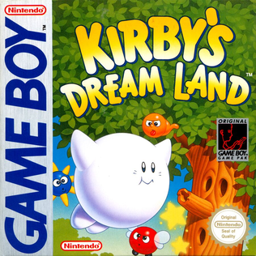
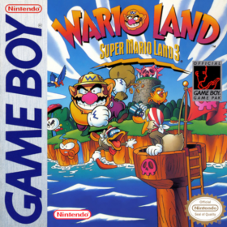
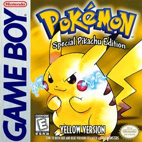
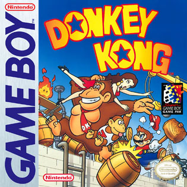
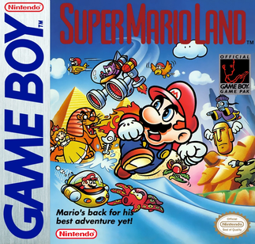
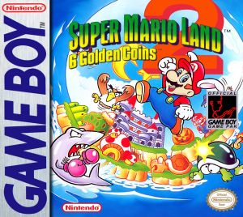
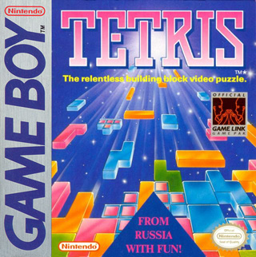
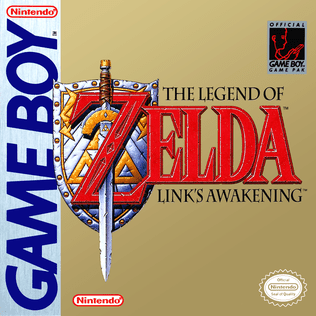
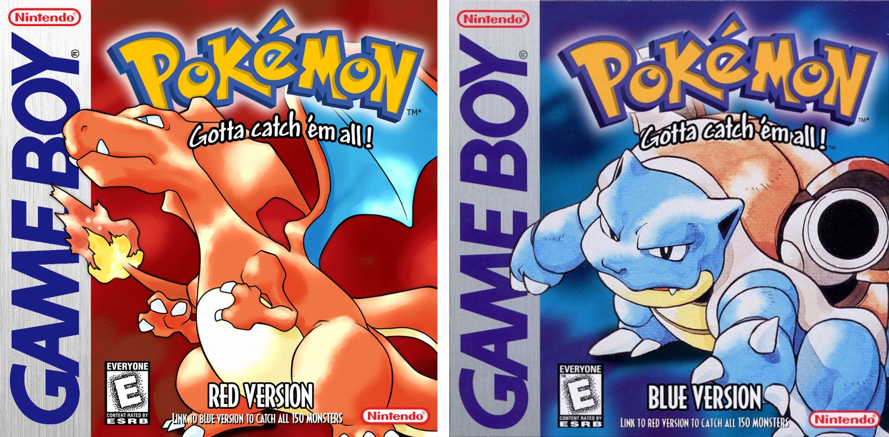

TOP 10 MUNDIAL
GAME BOY
Los 10 mejores juegos de la consola que nunca se apago
CONTEXTO
UNA PANTALLA VERDE QUE LO CAMBIO TODO
Nintendo lanzo Game Boy en 1989 con specs inferiores a la competencia (Atari Lynx, Sega Game Gear tenian pantalla a color) y gano igual: bateria que duraba 10x mas y un catalogo que iba de puzzles perfectos a RPGs que se volvieron fenomenos globales. Hoy: los 10 mejores.
#10
TOP

GAME BOY
TARROVISIONCH 10
NO SIGNAL
Inserta gameplay aqui
Kirby's Dream Land
GAME BOY · 1992 · HAL LABORATORY / NINTENDO
▶ POR QUEEl debut de Kirby. Simple a proposito -Sakurai lo diseño facil de completar para jugadores nuevos- pero el control de vuelo/inhalado sento las bases de toda una saga que sigue viva hoy.
#9
TOP

GAME BOY
TARROVISIONCH 09
NO SIGNAL
Inserta gameplay aqui
Metroid II: Return of Samus
GAME BOY · 1991 · NINTENDO R&D1
▶ POR QUESecuela atmosferica y mas oscura que el original de NES. Samus debe exterminar a todos los Metroid del planeta SR388 -mision con final claro, poco comun en la saga. Mejoro control y estructura de nivel.
#8
TOP

GAME BOY
TARROVISIONCH 08
NO SIGNAL
Inserta gameplay aqui
Wario Land: Super Mario Land 3
GAME BOY · 1994 · NINTENDO
▶ POR QUEWario -el antihero avaro que debuto como villano en Super Mario Land 2- se gana su propio juego y su propia filosofia: en vez de vidas, importa cuanto oro juntas. Plataformas con reglas propias.
#7
TOP

GAME BOY
TARROVISIONCH 07
NO SIGNAL
Inserta gameplay aqui
Pokemon Yellow: Special Pikachu Edition
GAME BOY · 1998 · GAME FREAK
▶ POR QUELa version 'definitiva' de la primera generacion: Pikachu como inicial obligatorio (te sigue por el mapa, algo nuevo en la saga), mas fiel al anime que estaba explotando en popularidad en ese momento.
#6
TOP

GAME BOY
TARROVISIONCH 06
NO SIGNAL
Inserta gameplay aqui
Donkey Kong
GAME BOY · 1994 · NINTENDO
▶ POR QUEArranca como remake fiel del arcade de 1981 (4 niveles) y despues explota en 97 niveles nuevos de puzzle-platforming genial -uno de los juegos mas subestimados del catalogo.
#5
TOP

GAME BOY
TARROVISIONCH 05
NO SIGNAL
Inserta gameplay aqui
Super Mario Land
GAME BOY · 1989 · NINTENDO
▶ POR QUEJuego de lanzamiento de la consola. Mario en formato mas compacto y veloz, con niveles inspirados en Egipto y escenarios submarinos/espaciales -un logro tecnico real para 1989.
#4
TOP

GAME BOY
TARROVISIONCH 04
NO SIGNAL
Inserta gameplay aqui
Super Mario Land 2: 6 Golden Coins
GAME BOY · 1992 · NINTENDO
▶ POR QUEMejora en todo al original: mapa no lineal, niveles mas creativos (un nivel dentro de una abeja gigante, otro dentro de un fantasma). Mas de 11 millones de copias vendidas -uno de los mas exitosos de la consola.
#3
PODIO

GAME BOY
TARROVISIONCH 03
NO SIGNAL
Inserta gameplay aqui
Tetris
GAME BOY · 1989 · NINTENDO / BULLET-PROOF SOFTWARE
▶ POR QUEEl pack-in que vendio la consola. Nintendo eligio empaquetar Tetris en vez de Super Mario Land -decision que hoy se lee como una de las mas inteligentes de la historia de la compañia: un juego que enganchaba a CUALQUIER publico.
#2
PODIO

GAME BOY
TARROVISIONCH 02
NO SIGNAL
Inserta gameplay aqui
The Legend of Zelda: Link's Awakening
GAME BOY · 1993 · NINTENDO
▶ POR QUEPrimer Zelda portatil y uno de los mas aclamados de la saga entera. Historia extrañamente melancolica (toda la isla es un sueño) con toques de humor -referencias a Mario, Kirby y otros personajes Nintendo aparecen sueltas por el mapa.
#1
EL TRONO

GAME BOY
TARROVISIONCH 01
NO SIGNAL
Inserta gameplay aqui
Pokemon Rojo y Azul
GAME BOY · 1996 (Japon) / 1998 (occidente) · GAME FREAK
▶ EL TRONOEl juego que redefinio que podia ser un RPG portatil. El sistema de intercambio via cable Link -necesitas a un amigo para completar la Pokedex- fue la primera vez que un juego dependia de la comunidad, no del single player, para completarse al 100%. Fenomeno cultural que sigue vivo 30 años despues.
ANALISIS DEL TOP
POCOS PIXELES, MUCHA AMBICION
El top de Game Boy mezcla remakes geniales (Donkey Kong), plataformeros perfectos (Wario Land, Super Mario Land 2), y dos fenomenos que trascendieron el gaming por completo (Tetris, Pokemon). La consola con menos specs de su generacion termino con uno de los catalogos mas queridos de toda la historia.
CIERRE
¿Y LOS PRECIOS?
¿De acuerdo con Pokemon en el trono? ¿Que juego te falto? Comenta abajo. Se viene el Top Precios de Game Boy: los cartuchos que hoy valen mas que la consola misma.